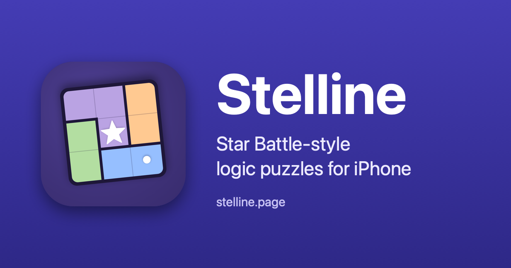

Press kit
Stelline press kit
Everything needed to write about Stelline: the facts, three ready-made descriptions, the icon and screenshots, and how to reach the developer. Last updated 11 September 2026.
Calm, unlimited Star Battle-style puzzles for iPhone. Every board has exactly one solution.
One-line positioning, free to quote.
Fact sheet
| Name | Stelline (listed on the App Store as “Stelline: Star Logic Puzzles”). The name is Italian for “little stars”. |
|---|---|
| What it is | A Star Battle-style logic puzzle game: one queen, or two stars, in every row, column and region, and no two pieces touching. Unlimited boards, each generated on the phone and verified to have exactly one solution. |
| Platform | iPhone, iOS 26 or later. Portrait only. Not available for iPad, Mac or Apple Watch. |
| Price | USD 1.99 one-time purchase (local equivalent elsewhere). No ads, no in-app purchases, no subscription. |
| Release | Version 1.0 on 9 September 2026. Version 1.1, with Today's board, Game Center leaderboards and board share links, in September 2026. |
| Languages | English. |
| Category | Games › Puzzle (secondary: Board). |
| Developer | An independent developer; the app is written from scratch in Swift, including its own generator, solver and deduction engine. |
| Data collected | None. No network code, no account, no analytics, no third-party code. Game Center leaderboards are optional and off by default; see the privacy policy. |
| App Store | https://apps.apple.com/app/id6808032290 |
| Website | https://stelline.page/ |
| Support | support@stelline.page · https://stelline.page/support/ |
| Press kit | This page: https://stelline.page/press/. Full-resolution images: github.com/ilan-bel/Stelline/tree/main/collateral. |
Descriptions
Three lengths of the same text, in the wording of the App Store listing. Quote them whole or in part; no attribution is needed.
Short about 50 words
Stelline is a calm Star Battle-style logic game for iPhone. Every board is generated on your device and verified to have exactly one solution. Place one queen, or two stars, in every row, column and region, and never let two touch. Hints teach the next logical step. No ads, no account, nothing leaves your phone.
Medium about 100 words
Stelline is a calm Star Battle-style logic game for people who solve by reasoning, not by trial and error. Place one queen in every row, column and coloured region, never letting two touch, or switch to 2-star mode on boards up to 11×11. Every board is generated on your iPhone, verified to have exactly one solution, and graded Easy to Expert by a deduction engine with seventeen human techniques, the same engine that powers the hints. Hints count what is out of place before saying where, then walk you through the next logical step. No ads, no account, no internet needed, and nothing about you is collected.
Long about 300 words
Stelline is a calm Star Battle-style logic game for people who solve by reasoning, not by trial and error. Every board is generated on your iPhone, verified to have exactly one solution, and graded by the same deduction engine that powers its hints. No ads, no account, and nothing leaves your phone.
The rules fit in a sentence: one queen in every row, every column and every coloured region, and no two queens touching, not even at a corner. When that feels easy, 2-star mode asks for two stars in every row, column and region on boards up to 11×11.
Boards are built on the device, so there is no pack to run out of: 1-queen boards from 6×6 to 11×11, 2-star boards from 9×9 to 11×11. A deduction engine with seventeen human techniques solves each board the way a person would and grades it Easy, Medium, Hard or Expert from the reasoning it needed; Expert is labelled honestly for boards that need what-if reasoning.
Hints teach rather than tell: the first tap shows how many queens and dots are misplaced, never where; Show me where then highlights the row, column or region behind the next deduction, names the technique, and applies the step only when you ask. No hints and no conflicts earn the Flawless badge.
Tap to cycle a cell, drag to dot a run, undo, redo, a hideable timer and autosave. Pastel palette, Classic black-and-white look or colour-blind mode; light or dark appearance; a crown or a star as your piece. VoiceOver, Dynamic Type and Reduce Motion are supported throughout.
Since version 1.1, Today's board gives every player the same puzzle for 24 hours, with optional Game Center leaderboards, and any board can be shared as a link. Stelline is written from scratch in Swift by one independent developer: a small app that tries to do one thing carefully and give you a fair puzzle, every time.
What is new in 1.1
Stelline 1.1 (September 2026) brings a new Home screen, board codes you can share, and the daily board.
- Today's board: the same board for everyone for 24 hours, keyed to UTC, generated on each phone from the date, so no connection is needed. A 9×9 board in 1 queen mode and a 10×10 board in 2 stars mode, kept separately from the ordinary game so you can leave and come back.
- Optional Game Center leaderboards: turn Game Center on in Settings to post your time on the two daily leaderboards. Off by default; the app still works entirely offline without it.
- Board share links: every board has an id now. Share it from the game or from the Solved sheet as a link of the form
https://stelline.page/b/<code>; a friend opens it with one tap when the app is installed, or sees the board and a link to the App Store in the browser. The code can also be typed under Sample boards. - A redesigned Home: the app icon, a bolder title, your colour palette, and a Continue card that shows the board you left. The board sits centred on the screen with the controls at the edges.
- Clear and New puzzle ask before wiping a game in progress.
Icon, screenshots and social card
All images on this page, and the full-resolution set in the public repository's collateral folder (App Store screenshots at 1320 × 2868 and the 886 × 1920 App Preview video), may be used in coverage of Stelline, cropped or resized as needed, with no further permission. Please do not alter the icon or place it in a different shape.
App icon
Screenshots
The seven App Store screenshots, captured on an iPhone 17 Pro Max simulator, shown here at half size (660 × 1434 px). Captions are the App Store captions.


Social card

About the developer
Stelline is made by one independent developer, with no team, no publisher and no investors. The app is written from scratch in Swift for iPhone, including its own puzzle generator, exact solver and the seventeen-technique deduction engine that grades every board and explains every hint. It has no network code, no analytics and no advertising, because a puzzle game does not need any of them. The idea is simple: a fair puzzle, every time, on a screen that leaves you alone to think.
Contact
- Email: support@stelline.page
- Contact form: tally.so/r/Pdx98x (no account needed; only what you type is sent)
- Ideas board: stelline.featurebase.app
Promo codes for reviewers are available on request, and questions about the generator, the solver or the difficulty grading are welcome.